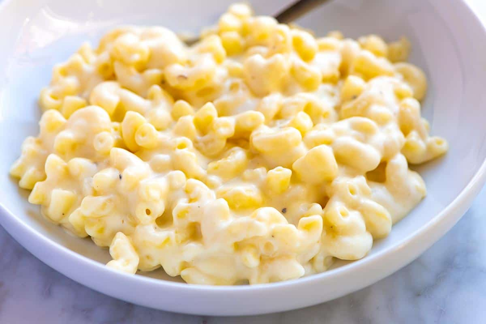

Mac n' Cheese Recipe

Description:
Boiled pasta drizzled in authentic Italian cheese sauce,
served with
a side of garlic bread to really compliment the dish and treat your tastebuds.
Ingredients
- Fusilli pasta
- Italian cheddar cheese
- Garlic bread
- Butter
Instructions
- Boil 200g of fusilli pasta for 13m
- Turn off heat and drain water
- Mix pasta with cheese sauce and 1tsp of butter
- Mix until it is a liquid then heat for a further 4m
- Cook garlic bread for 3m
- Dish up food.
- Enjoy your meal!